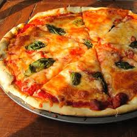
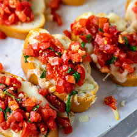

Italian cuisine is loved worldwide for its rich flavors, fresh ingredients, and traditional dishes. Explore famous Italian recipes like Pizza, Pasta, and Tiramisu!

Pizza Margherita
Classic pizza with tomato, mozzarella, and basil.
See Recipe

Pasta Carbonara
Creamy pasta with eggs, cheese, pancetta, and pepper.
See Recipe

Lasagna
Layered pasta with meat, cheese, and tomato sauce.
See Recipe

Tiramisu
Coffee-flavored dessert with mascarpone cream.
See Recipe
Risotto
Creamy Italian rice dish cooked with broth and cheese.
See Recipe

Bruschetta
Grilled bread topped with tomatoes, garlic, and basil.
See Recipe